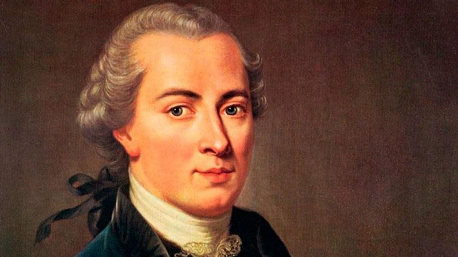

Immanuel Kant (Königsberg, Prusia; 22 de abril de 1724-ibídem, 12 de febrero de 1804) fue un filósofo y científico alemán de la Ilustración.1?2?3? Fue el primero y más importante representante del criticismo y precursor del idealismo alemán. Es considerado como uno de los pensadores más influyentes de la Europa moderna y de la filosofía universal. Además se trata del penúltimo pensador de la modernidad, anterior a la filosofía contemporánea que comienza en 1831 tras la muerte del pensador Hegel.1?2?4?
Kant distingue tres preguntas filosóficas que dedica cada una en sus obras capitales: ¿Qué debo hacer? con la Crítica de la razón práctica, centrada en la ética y La metafísica de las costumbres con una parte acerca de la doctrina de la virtud y la otra centrada en el ius, la doctrina del derecho5?; ¿Qué puedo esperar? en la Crítica del juicio, donde investiga acerca de la estética y la teleología; y ¿Qué puedo conocer? en la Crítica de la razón pura6?, calificada generalmente como un punto de inflexión en la historia de la filosofía, en la que investiga la estructura misma de la razón. Asimismo se propone que la metafísica tradicional se puede reinterpretar a través de la epistemología, ya que podemos encarar problemas metafísicos cuando entendemos y relacionamos la fuente con los límites del conocimiento.7?